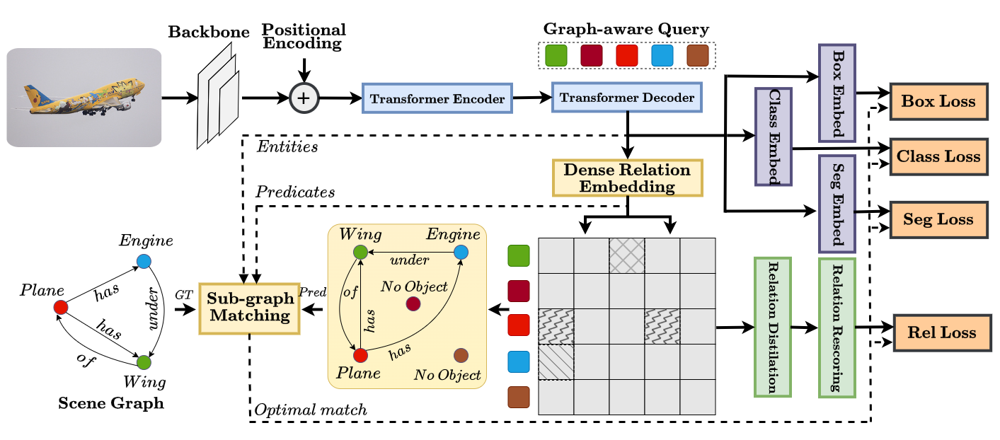
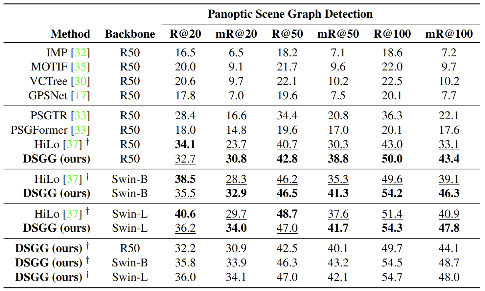
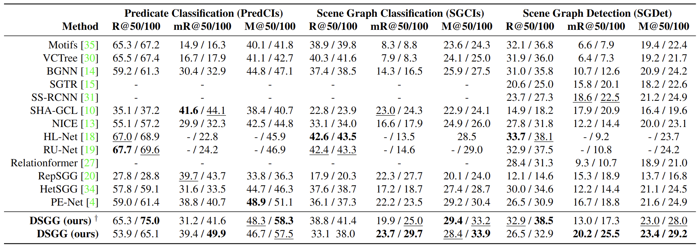
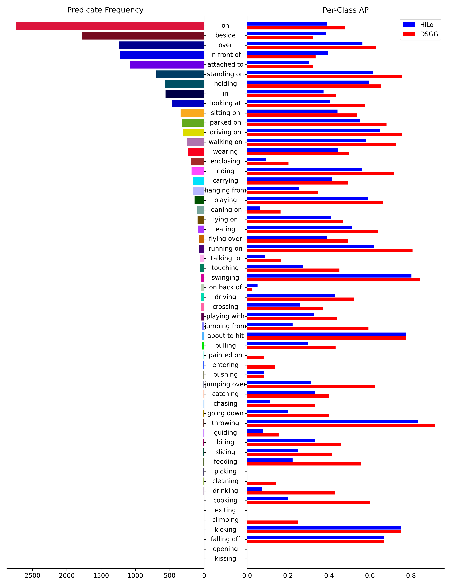

Scene graph generation aims to capture detailed spatial and semantic relationships between objects in an image, which is challenging due to incomplete labelling, long-tailed relationship categories, and relational semantic overlap. Existing Transformer-based methods either employ distinct queries for objects and predicates or utilize holistic queries for relation triplets and hence often suffer from limited capacity in learning low-frequency relationships. In this paper, we present a new Transformer-based method, called DSGG, that views scene graph detection as a direct graph prediction problem based on a unique set of graph-aware queries. In particular, each graph-aware query encodes a compact representation of both the node and all of its relations in the graph, acquired through the utilization of a relaxed sub-graph matching during the training process. Moreover, to address the problem of relational semantic overlap, we utilize a strategy for relation distillation, aiming to efficiently learn multiple instances of semantic relationships. Extensive experiments on the VG and the PSG datasets show that our model achieves state-of-the-art results, showing a significant improvement of 3.5% and 6.7% in mR@50 and mR@100 for the scene-graph generation task and achieves an even more substantial improvement of 8.5% and 10.3% in mR@50 and mR@100 for the panoptic scene graph generation task.
Method

An illustration of the DSGG architecture. DSGG adopts a single-stage transformer-based architecture that employs graph-aware queries to predict the scene graph. The input image is first processed by the backbone network and then passed through the transformer to extract the compositional tokens. These tokens are used to learn the class confidence, bounding box, and segmentation. Additionally, a dense relation embedding module is used to learn the pairwise relation between each object in the image. A prediction graph is then generated and compared against the ground truth graph to find the optimal permutation of nodes. To rank the final relations, dense relation distillation and re-scoring modules are used.
Experiments

Evaluation on the PSG dataset.
The best and the second best methods under each setting are marked according to the formats. † represents the models trained using additional relation labels obtained through a baseline-trained model.

Evaluation on the Visual Genome dataset.
The best and second best methods under each setting are marked according to formats. † shows DSGG results without logits adjustment.
We included only a representative selection of recent works. Additional approaches have been included in the supplementary material. Note that DSGG outperforms all the baselines, by a considerable margin in the case of mean recall and the mean@K metric.
Qualitative results of the DSGG method on the panoptic scene-graph generation (PSG) dataset.
Longtail Performance

Per-Class Performance on the PSG dataset. Left column shows the predicate names and their frequency in the test split. Right column shows the per-category results of the HiLo and our method DSGG results.
Bibtex
@article{Hayder2024DSGG,
title={DSGG: Dense Relation Transformer for an End-to-end Scene Graph Generation},
author={Zeeshan Hayder and Xuming He},
booktitle={Proceedings of the IEEE/CVF Conference on Computer Vision and Pattern Recognition (CVPR)},
year={2024}
}